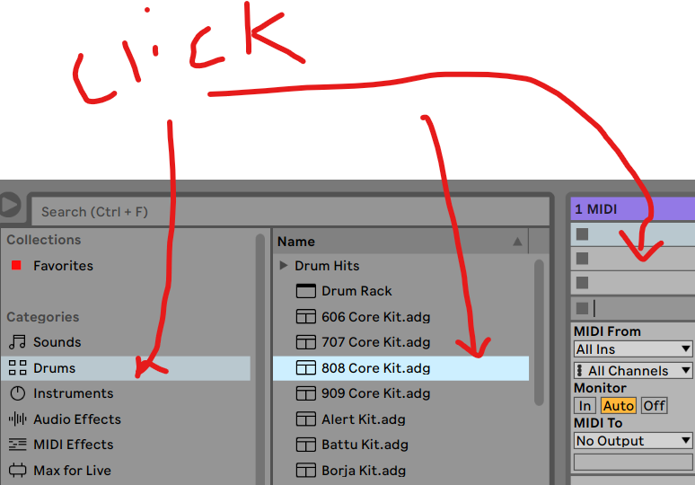

2put drums into midi
3
 whats this?
whats this?4
 tempo (bpm), metronome (click), whats this?
tempo (bpm), metronome (click), whats this?5make a "clip" in the drum channel, draw yo drumz
6 where should the snare go?
 ??
??7 don't forget theres a help box and tutorial (where?!)
8do the eq (audio effect!)
whats this?tempo (bpm), metronome (click), whats this? ??